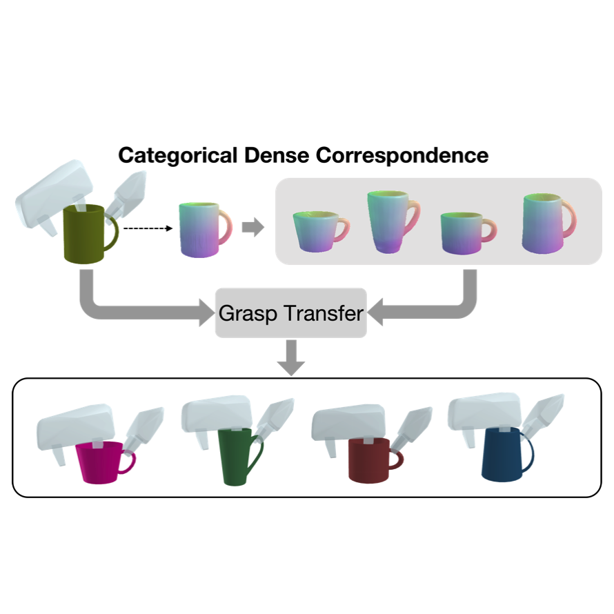
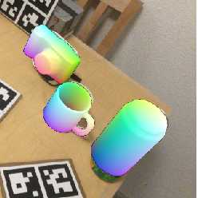
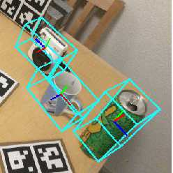

Hongtao Wen (文洪涛) |
Conferences:
|  |
TransGrasp: Grasp Pose Estimation of a Category of Objects by Transferring Grasps from Only One Labeled Instance Hongtao Wen*, Jianhang Yan*, Wanli Peng, Yi Sun European Conference on Computer Vision 2022 (ECCV 2022), * indicates equal contribution. Webpage / Code / PDF We propose TransGrasp, a category-level grasp pose estimation method that predicts grasp poses of a category of objects by labeling only one object instance. |
|


|
Self-Supervised Category-Level 6D Object Pose Estimation with Deep Implicit Shape Representation Wanli Peng, Jianhang Yan, Hongtao Wen, Yi Sun Thirty-sixth AAAI Conference on Artificial Intelligence (AAAI 2022) Webpage / Introduction Video / Code / PDF We present a self-supervised method for category-level 6D pose estimation, SSC-6D, which can predict unseen object poses without explicit pose annotations and exact 3D models in real scenarios for training. |
Patents:
Research Projects:
These videos demonstrate some specific cases where TransGrasp predicts robust grasp poses for robotic manipulation.| Robot Demonstration: robot-assisted watering mobility-impaired individuals. | Robot Demonstration: autonomously pouring water from cup into bowl. | Robot Demonstration: autonomously grasping household objects. |
Open-Source Projects:
Last updated date: 23 July, 2022.
Part of page is borrowed from Jon Barron and Yiyuan Yang.
Copyright ©2022-2023 Hongtao Wen. All Rights Reserved.